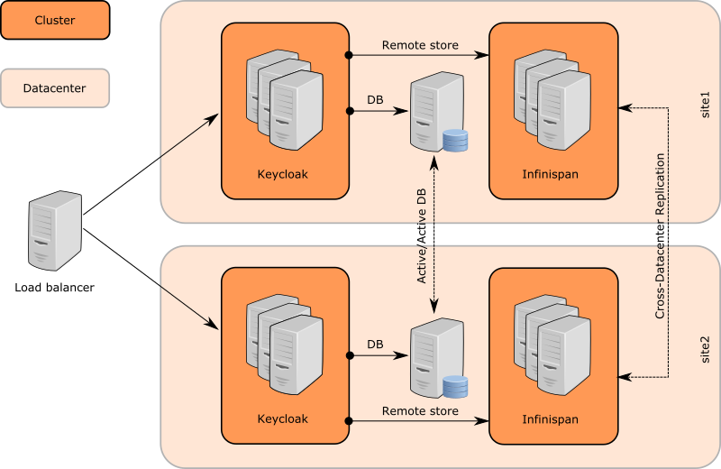
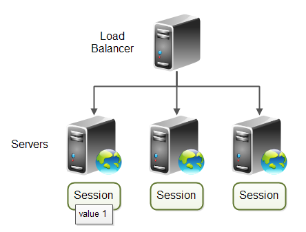

Cross DC - targets
- Working deployments with many Keycloak servers in various sites / datacenters
- Data consistency - updates to users,realms,sessions done in site1 visible on site2
- Performance - Ensure consistency with the minimal amount of messages across sites
Keycloak data
- Database (RDBMS) - Persistent metadata about realms, clients, roles, users, offline sessions
- Infinispan library - used as cache implementation
- Data caches - Used to avoid many unecessary RDBMS calls
- Need to be invalidated when particular object updated in DB
- Session caches - Used to handle sessions data
- Not persistent across server restarts
Singlenode deployment
- Single database (RDBMS) required
- Data caches - local infinispan caches
- Session caches - local infinispan caches
Cluster deployment
- Single database (RDBMS) required
- All cluster nodes connected to that DB
- Data caches - local infinispan caches
- Special "invalidation" messages sent across cluster nodes
- Session caches - distributed/replicated infinispan caches
Cross-DC deployment
- Replicated database (RDBMS) required
- MariaDB Galera or Oracle RAC
- Infinispan/JDG server
- Special server process provided by Infinispan
- Used to backup sessions data to different DCs
- Used to send invalidation messages to different DCs
Communication details

- 5 infinispan clusters with 2 datacenters setup
- Keycloak nodes cluster in site1
- JDG nodes cluster in site1
- Cluster between JDG nodes on site1 and on site2 (JGroups RELAY2 protocol and backup caches)
- JDG nodes cluster in site2
- Keycloak nodes cluster in site2
- Keycloak sends message to JDG server on same site
- JDG server sends it to JDG server in the other site through RELAY2
- JDG server on second site propagates it to Keycloak servers on second site through HotRod protocol (Client listeners)
- Keycloak servers listen to events through client listeners and do appropriate actions (Invalidate cache, update session caches)
Authentication sessions
- Valid during authentication of user
- Data not replicated across sites
- Relies on browser sticky session to ensure loadbalancer forwards to same Keycloak node (on same DC)
Authentication sessions stickyness

User sessions
- Created after successful user authentication
- Data replicated across sites
- Can't rely on browser sticky session due both user and client applications require them
Modes
- Active/active
- Active/passive
Active/active
- Users and client application send requests to both datacenters
- After write on first DC, data need to be immediately visible for reading on second DC
- Default settings
- Worse performance
Active/passive
- Users and client application send requests to one datacenter
- Second DC used just as a backup in case of failure of first DC
- Better performance
Basic setup
- Documentation: http://www.keycloak.org/docs/latest/server_installation/index.html#setup
- Recommended to try this to understand cross-dc better
Cross-DC deployment administration
Recommended startup order
- Replicated databases in both datacenters
- JDG servers in both datacenters
- Keycloak servers in both datacenters
Requirements
- Keycloak requires database in its DC to be running
- Keycloak requires (at least one) JDG server in its DC to be running
- Keycloak doesn't strictly need JDG server on the other DC to be running, but it's recommended
- If JDG server on other DC is not running, it means that second datacenter is "offline" from first datacenter PoV
Migration of Keycloak to newer version
- Complicated due the requirements above
- No rolling upgrade (zero-downtime upgrade) support
Split-brains
- Datacenters are in different WAN
- Bigger chance of network outages and broken connections among sites
- JDG/Keycloak has good support for:
- Automatically detect outages
- Manually planned outages (Expected downtimes) - take site offline
- Recover from outages
Future
- Zero downtime support (Rolling upgrade)
- Easier deployment
- No requirement of replicated RDBMS
- Just replicated JDG will be required
- Should be easier in cloud deployments (Openshift etc)